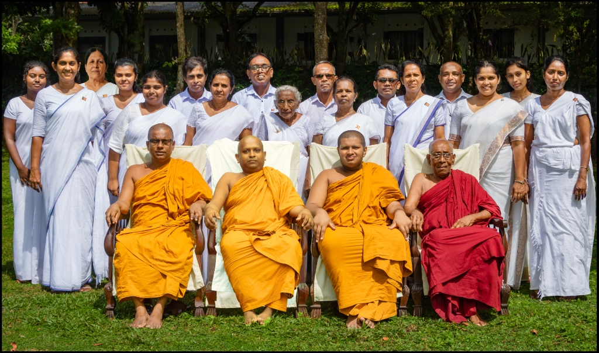

අප ගැන හා අභිමානවත් ඉතිහාසය
“දැහැමින් ඉදිරියට” තේමා කොටගත් ශ්රී සම්බෝධි දහම් පාසලේ අඩසියවසක සදහම් පුනරුදය.
1977 සිට 2027: පනස් වසරක සදාචාර සම්ප්රදාය
1977 වසරේදී පලාතොට ආනන්ද අමරසිංහ භික්ෂු විවේකාරාමය කේන්ද්ර කරගනිමින් ගෞරවණීය මහා සංඝරත්නයේ පුරෝගාමීත්වයෙන් සහ ප්රදේශවාසී සැදැහැවතුන්ගේ දායකත්වයෙන් ඇරඹි ශ්රී සම්බෝධි දහම් පාසල, ආරම්භයේදී සිසුන් සුළු පිරිසකගෙන් යුතුව පන්සලේ ධර්ම ශාලාව තුළ ආරම්භ විය.
දශක පහක් පුරා අඛණ්ඩව විකාශනය වූ අප ආයතනය, අද වන විට 1 ශ්රේණියේ සිට ධර්මාචාර්ය උසස් විභාගය දක්වා පන්ති, 400 කට අධික දහම් දරුවන්ගෙන් සහ සුදුසුකම්ලත් 22 දෙනෙකුගෙන් යුත් ආචාර්ය මණ්ඩලයකින් සමන්විත දිවයිනේ කීර්තිමත් දහම් පාසලක් බවට පත්ව ඇත.
“හෙළ දැයට දැහැමින් පිරිපුන් ගුණවත් මානව පරපුරක් දායාද කිරීම”
වසර පනහක් මුළුල්ලේ (1977 - 2027) හෙළ දැයට ගුණවත් මානව පරපුරක් දායාද කරමින්, සම්බුදු සදහම් මඟ ඔස්සේ බුදුරදුන් වදාළ ආර්ය අෂ්ටාංගික මාර්ගයේ ගුණ ධර්ම ප්රායෝගික දිවියට එක්තැන් කරවන, පරාර්ථකාමී, විනයගරුක හා අධ්යාත්මික සුවයෙන් පිරිපුන් ආදර්ශවත් බෞද්ධ දරු පරපුරක් අඛණ්ඩව දැයට දායාද කිරීම.
“දැහැමින් ඉදිරියට යමින් පනස් වසරක අභිමානයෙන් සදහම් ආලෝකය පැතිරවීම”
ශ්රී සම්බෝධි දහම් පාසල් මාතාවගේ අභිමානවත් ස්වර්ණ ජයන්ති මහෝත්සවය (1977 - 2027) අභියස, “දැහැමින් ඉදිරියට” යන තේමාව පෙරදැරි කරගනිමින්, ජාතික බෞද්ධ විෂය නිර්දේශයට අනුකූලව ගුණාත්මක ධර්ම අධ්යාපනයක් ලබා දීම, භාවනා, චරිත සංවර්ධනය සහ සමාජ සත්කාර කුසලතාවලින් පිරිපුන් නැණවත් බුදු දරුවන් ලොවට දායාද කිරීම.
පාසල් නිල ලාංඡනය හා නිල ඇඳුම් බැජ් එක
ඡායාරූප අංක 2 සහ 3 මඟින් නිරූපිත ලාංඡනය සහ නිල ඇඳුම් සාක්කු ලාංඡනයේ (Pocket Badge) පරිපූර්ණ ආගමික අරුත.
ශ්රී සම්බෝධි නිල ලාංඡනය
Official Crest & Sealරවුම් හැඩයෙන් යුත් ලාංඡනය වටා “ශ්රී සම්බෝධි දහම් පාසල” සහ “SRI SAMBODI DAHAM PASALA” යනුවෙන් සිංහල හා ඉංග්රීසි බසින් සඳහන් වේ. මැද පිහිටි අර අටකින් යුතු ධර්මචක්රය සහ එහි කේන්ද්රයේ ඇති සුදු නෙළුම් මල මඟින් නිර්මල බුද්ධ ධර්මය හා ආර්ය අෂ්ටාංගික මාර්ගය ප්රකට කෙරේ. පහළින් ඇති රිබන් පටියේ “සබ්බ දානං ධම්ම දානං ජිනාති” යන උතුම් ධර්ම පාඨය සටහන්ව ඇත.
ශිෂ්ය නිල ඇඳුම් බැජ් එක (Pocket Badge)
Student Uniform Embroidered Badgeසිසු දරුවන්ගේ සුදු ජාතික ඇඳුමේ සහ සිසුවියන්ගේ ළමා සාරියේ වම් ළය මත පළඳින මෙම විචිත්ර බැජ් එකෙහි ඉහළින්ම ෂඩ්වර්ණ බෞද්ධ ධජය ගෞරවාන්විතව පිහිටුවා ඇත. එමඟින් සවණක් ඝන බුදු රැස් මාලාව මෙන්ම ශ්රී ලාංකේය බෞද්ධ උරුමය හා අභිමානය සිහිපත් කරවයි.
ගෞරවණීය මහා සංඝරත්නය හා ආචාර්ය මණ්ඩලය
ශ්රී සම්බෝධි දහම් පාසලේ 400+ ක් වූ දහම් දරුවන්ගේ නැණ ගුණ වඩමින්, නිර්මල බුදුදහම ප්රායෝගිකව හුරු කරවන අනුශාසක පූජ්ය මහා සංඝරත්නය සහ කැපවූ 22+ ක ආචාර්ය මණ්ඩලය.

දහම් පාසල් ගීතය
සම්බුදු හිමිගේ - සදහම් සිසිලෙන්
සැනහෙන අප සිරිලක් දරුවෝ //
දහම් පාසලේ සෙවණෙහි වැඩෙමින්
උදාර ගුණදම් සිත දැරුවෝ //
පස්පව් - දස අකුසල් දුරලා
ඉසිකෝ මන් හැම බිඳ හැරලා
මෙත් කරුණා මුදිතා දී මුණි ගුණ
සපුරා පිළිවෙත් මග සරසා
සොමි නුවනින් දුටු දුටුවන් පිනවන
පිය තෙපුලින් ඇසු ඇසුවන් සනහන
හද බැතියෙන් නිති තෙරුවන් නමදින
උදාර ගුණදම් සිත දැරුවෝ
අපි වෙමු සිරිලක බුදු දරුවෝ ///